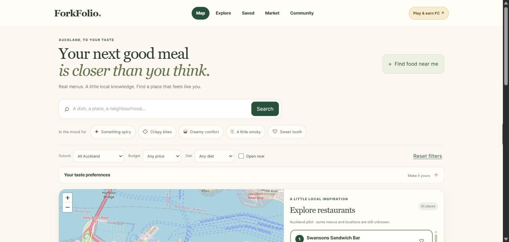

Room state and command receipts persist in PostgreSQL. SignalR notifies clients of changes, while the server controls game rules and what each player can see. Duplicate requests reuse their command ID rather than applying the action twice.
The project is a practical exploration of state consistency, reconnects and usability on mobile networks. The public beta runs on free hosting, so its backend may need time to wake.
Live beta interface · captured November 2026
Phones↔SignalR + API↔PostgreSQL
02 LOCAL DISCOVERY / PWA
ForkFolio
Find your next good meal in Auckland.
A food-discovery PWA that brings maps, food preferences and restaurant information into one browsing experience.
ReactTypeScriptVinextCloudflare WorkersD1
Engineering focus
Source-aware discovery, structured data, offline read recovery and boundaries between public and authenticated features.
Current stage
Auckland pilot. Menu coverage and data quality are still developing. Virtual credits have no cash value; the app does not take payments or orders.
The pilot combines a Next-compatible Vinext application, versioned API routes and a D1 discovery projection. Drizzle defines the data model, and AWS Cognito supports authenticated areas.
Unknown prices, hours and menu information stay absent when there is no supporting evidence. A separate ingestion worker and staged deployment workflow support continued development; larger rollout goals remain future work.

Live pilot interface · captured November 2026
Preferences→Discovery API→Local places
03 DEVELOPER TOOLING / AI
AI Orchestration
Make an agent workflow inspectable and recoverable.
A local Windows control room for coordinating software work across repositories, from a proposed plan to review and delivery evidence.
Local prototype. Logical roles take turns under an enforced execution limit. Deployment support depends on each project’s configured contract.
A closer look at the engineering
SQLite stores task, job and evidence records; LangGraph checkpoints support workflow recovery. The controller associates approvals with the source revision and preserves uncertain external operations for inspection.
This is my personal project. It is distinct from Orca and Chorus, which are separate tools I use in my development workflow.
DELIVERY WORKFLOWLocal prototype
01
PlanDefine the outcome and scoped tasks
02
BuildWork in isolated checkouts
03
Check & reviewCollect evidence and use a fresh reviewer
04
Release gateCheck approvals and the project contract
Simplified from the implemented local workflow. Role count does not imply concurrent agents.
BACKGROUND
Learning through practical work.
A foundation in software engineering and mathematics, with internship experience in applied AI and backend development.
UNIVERSITY OF AUCKLAND
BE (Honours), Software Engineering BSc conjoint, Mathematics
JUN — AUG 2026
IKConsulting
Intern
Worked on an agentic workflow to analyse ServiceNow support tickets for trends and reports, and streamline structured reporting for stakeholders.
NOV 2025 — MAR 2026
Allsite.ai
R&D Intern
Built a FastAPI tool for aerial-imagery maps, worked on road-detection model fine-tuning, and used Pydantic in automated tests within a Scrum team.
HOW I WORK
Curiosity, with checks.
AI tools are part of my process. Clear scope and evidence keep the work grounded.
01 / UNDERSTAND
Start with the person.
Clarify what someone needs to do, then make the smallest useful experience around it.
02 / ITERATE
Make the work visible.
Use scoped tasks and isolated worktrees. Keep decisions, feedback and changes easy to follow.
03 / VERIFY
Show what is ready.
Separate implemented behavior from future plans. Keep tests, review and release evidence alongside the work.
Part of my toolkit · Python, Java, JavaScript, React, SQL and Git, with TypeScript and .NET in recent projects.
I use Orca for agent workspaces and Chorus for structured planning and review. Both are external tools.
NEXT CONVERSATION
Let’s build something useful.
I’d like to meet engineers, teams and other people building thoughtful software — and hear about graduate or junior opportunities.